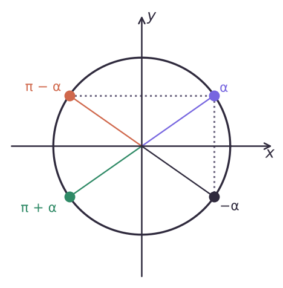

Алгебра · 10 класс · углублённый
25
§ 25
Формулы приведения
Любой угол — к острому
Вывод
Из формул сложения
- sin(π − α) = sin π cos α − cos π sin α = sin α
- cos(π + α) = cos π cos α − sin π sin α = −cos α
- sin(3π2 + α) = −cos α
- tg(π2 + α) = cos α−sin α = −ctg α
Алгебра · 10 класс · углублённыйУрок 25 · Формулы приведения
Окружность
Симметрии точек

π ± α, −α

π/2 − α
Алгебра · 10 класс · углублённыйУрок 25 · Формулы приведения
Правило
Два вопроса
- π2, 3π2 — функция меняется: sin ↔ cos, tg ↔ ctg
- π, 2π — функция сохраняется
- α — острый; знак — как у исходной функции в четверти аргумента
Алгебра · 10 класс · углублённыйУрок 25 · Формулы приведения
Таблица
Формулы приведения
| sin | cos | tg | |
|---|---|---|---|
| π2 − α | cos α | sin α | ctg α |
| π2 + α | cos α | −sin α | −ctg α |
| π − α | sin α | −cos α | −tg α |
| π + α | −sin α | −cos α | tg α |
| 3π2 − α | −cos α | −sin α | ctg α |
| 3π2 + α | −cos α | sin α | −ctg α |
| 2π − α | −sin α | cos α | −tg α |
Алгебра · 10 класс · углублённыйУрок 25 · Формулы приведения
Примеры
Считаем
- sin 210° = −sin 30° = −12
- tg 300° = −tg 60° = −√3
- cos²(π8) + cos²(3π8) = 1
- tg 1° · tg 2° · … · tg 89° = 1
Алгебра · 10 класс · углублённыйУрок 25 · Формулы приведения
Практика
Задачи урока
№ 1
Вычисли: а) cos 150°; б) sin 300°; в) tg 240°; г) ctg 135°.
№ 2
Вычисли: а) sin(7π6); б) cos(5π3); в) tg(−5π4); г) cos(−17π6).
№ 3
Приведи к функции угла от 0° до 45°: а) sin 160°; б) cos 290°; в) tg 205°; г) cos 125°.
№ 4
Упрости: а) sin(π2 + α) + cos(π + α); б) tg(3π2 − α) · tg(π − α).
Алгебра · 10 класс · углублённыйУрок 25 · Формулы приведения
Практика
Задачи урока
№ 5
Упрости cos(π − α) + sin(3π2 + α)sin(π2 − α).
№ 6
Вычисли sin²(π7) + sin²(5π14).
№ 7
A, B, C — углы треугольника. Докажи, что cos(A + B) = −cos C и tg(A + C2) = ctg(B2).
№ 8
Вычисли tg 10° · tg 20° · tg 70° · tg 80°.
Алгебра · 10 класс · углублённыйУрок 25 · Формулы приведения
Дома
Домашнее задание · 12
Д1
Найди острый угол x, для которого: а) sin x = cos 72°; б) tg x = ctg 25°.
Д2
Вычисли sin²1° + sin²2° + … + sin²89°.
Д3
Вычисли cos 20° + cos 160° + tg 40° · tg 50°.
Алгебра · 10 класс · углублённыйУрок 25 · Формулы приведения
Дома
Домашнее задание · 22
Д4
Известно, что cos α = 0,4. Найди sin(α − π2) + cos(π − α).
Д5
Реши уравнение sin(π2 + x) = 12 на отрезке [0; π].
Д6
а) Вычисли cos 1° + cos 2° + cos 3° + … + cos 179°. б) A, B, C — углы треугольника, cos(A + B) = −12. Найди угол C.
Алгебра · 10 класс · углублённыйУрок 25 · Формулы приведения